我在郑州：重温萝卜、白菜、土豆三件宝
原文链接 备份链接 *************▲*************1月30日，市民在郑州市一家大型超市内采购蔬菜。 （新华社记者 冯大鹏/图） 全文共2577字，阅读大约需要7分钟。 支撑我家一路走来的，有三样法宝：萝卜、白 …

1 月 24 号，我的老家湖北荆州宣布封城，上午火车、下午市内公交停运，现在，二月迈入中旬，距我从上海回到这里，已经快过去一个月了。
我是一名摄影师，1 月 20 日那天，我打包好行李踏上返乡的路，那时，我上海住所附近的几家药店已经买不到口罩和消毒用品了，即便是这样，我仍觉得事情不该那么严重，春节的临近、记忆中节日烟火的闪耀、一跃入江的沁爽，才是簇拥着我回家的前奏，再想到家中孤身一人的母亲，我没有计划过其他备选方案。
荆州离武汉两百公里，很多人在武汉学习、工作、生活。封城后，除生活必需之外，我都呆在家里。被 “困” 家中的这些天里，妈妈又生病了，不敢去医院，怕被感染，她偶尔发出疼痛的声音，让我特别不安。
接下来几天，母亲因疼痛不愿下床，并一直觉得四肢乏力，我监督她量体温，同时查阅大量关于冠状病毒患者的症状，不安逐渐变成了焦虑。1 月 27 日，在我的强迫下，母亲和我一同去了家附近的医院，医院并没有想象中的人满为患，除了进门量体温和挂号较拥挤外，一切井然有序，只是医生的防护装备和伙食看起来都有些简陋。医生告诉我，母亲只是因肩周炎犯病，才引起了不适。
一番虚惊后，我发现，我和妈妈从来没有像现在这样相处过，亲情回归到了日常起居、一蔬一饭的关心，这让我们对原本习以为常之物有了更多的感触和理解，这是灾难中的宝贵。
出门采购时我都会带上相机，习惯性的记录。我看到人们戴着口罩买菜、晨练、卖糖葫芦，竭尽所能地按部就班。有时，我会绕路去经常游泳的江边，有市民在江边稀疏地站着，眺望长江，江水流过的声响在此刻成为内心获取平静的一种方式。
有一次我遇见冬泳的老哥，问他：
“还来游泳，不害怕么？”
“害怕啊，害怕又有什么用呢，放心，我们冬泳的身体都好的很。”
“不过还是要小心点。”
“防护都做的非常好，你放心，我也不想害别人，再害怕，生活还是要继续呀。” 他一边回答，一边跑向闪着金边的江里。
在这个特殊的春节，时刻被各种情绪轮番轰炸，我总在想，自己到底应该做些什么。现在我知道了，答案就是尽我们所能，去维系住最珍贵的正常，因为只有在正常的时候，人们才容易辨别荒谬。
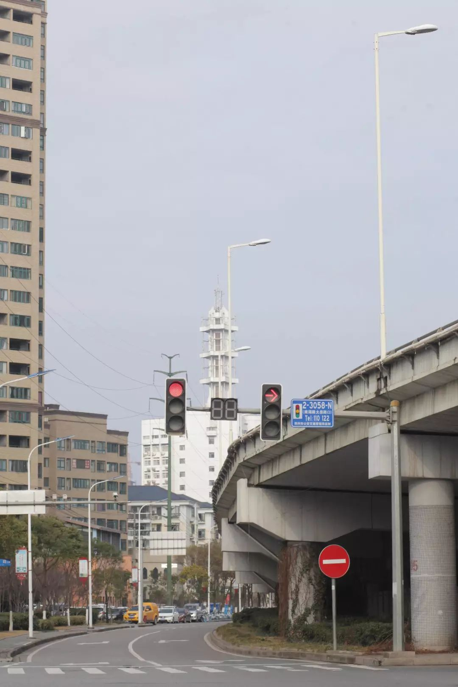空无一人的街道
 买菜回家的路人
买菜回家的路人
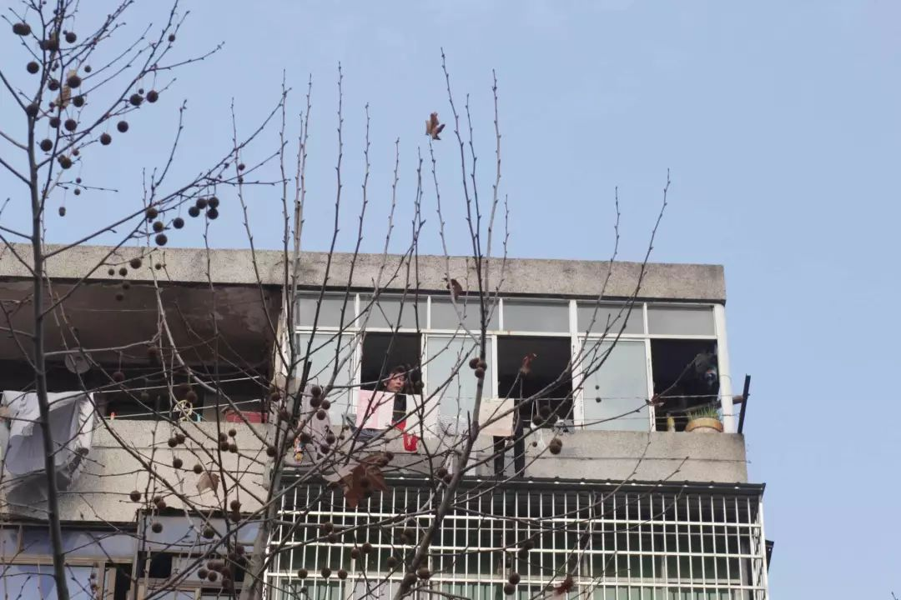从阳台里窥探外界的老哥
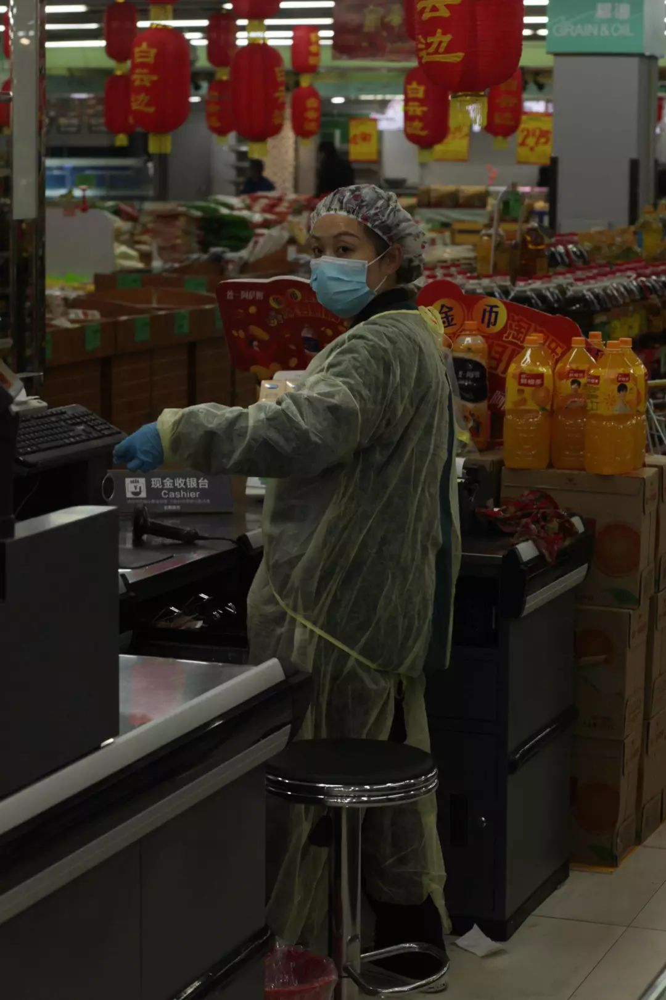正在忙碌着的收银员

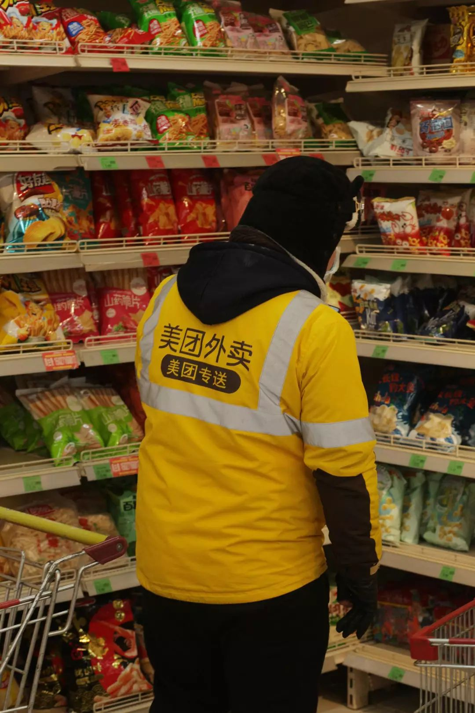
 载着物资的社区工作人员
载着物资的社区工作人员
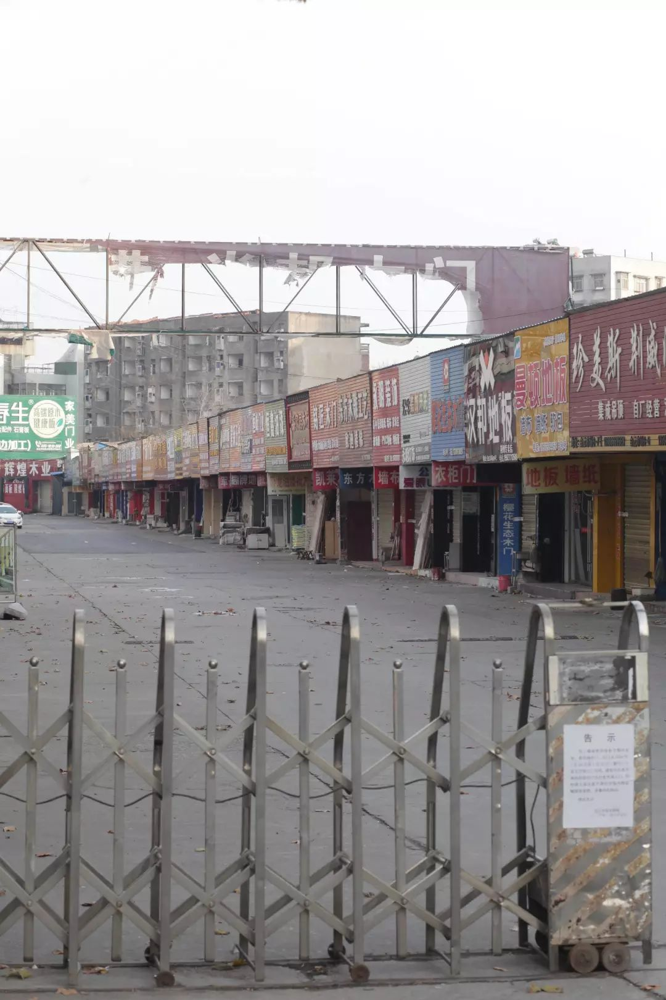昔日热闹的陶瓷城
 守护在江边的社区工作人员，看到我后很善意地提醒我不要在外逗留太久
守护在江边的社区工作人员，看到我后很善意地提醒我不要在外逗留太久
往日人满为患的江滩
欣赏江景的阿姨
 被封的长江大桥
被封的长江大桥
 夕阳下游泳的市民
夕阳下游泳的市民
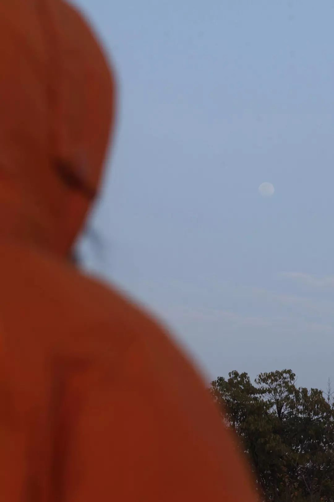若隐若现的月亮，我妈看到后说 “希望黎明早点来”
 围在一起分享搞笑视频的市民
围在一起分享搞笑视频的市民
 阳光下的万寿宝塔
阳光下的万寿宝塔
 还得 “继续生活” 的糖葫芦小贩
还得 “继续生活” 的糖葫芦小贩
江滩上的鞭炮残骸
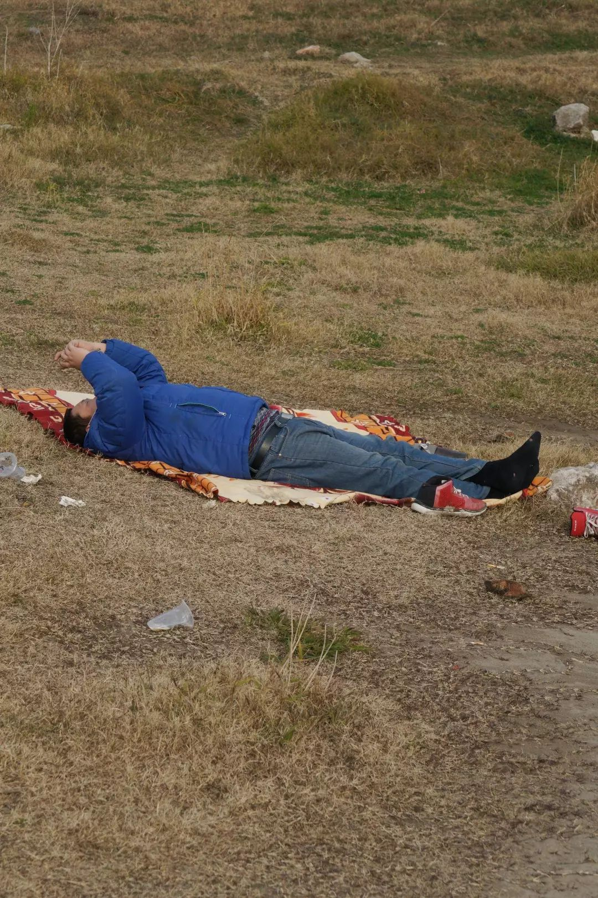享受日光浴的市民
 带着零食来江边享用的市民
带着零食来江边享用的市民
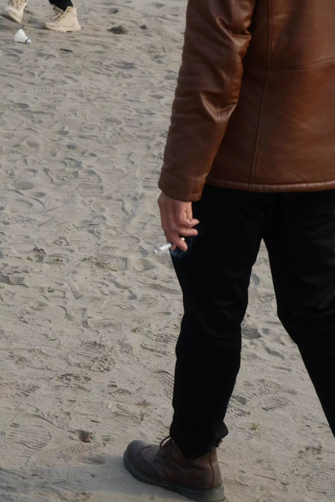拉下口罩吞云吐雾
 空无一人的江滩，不知是谁留下的期许
空无一人的江滩，不知是谁留下的期许
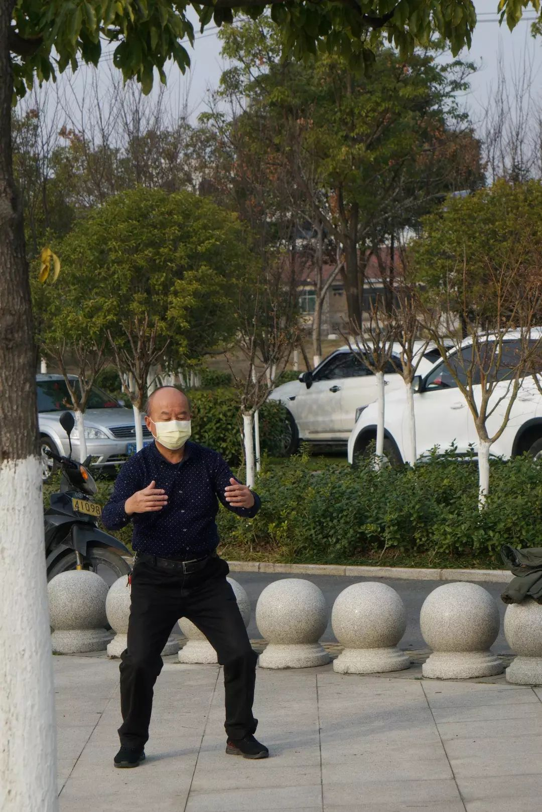锻炼身体的老人
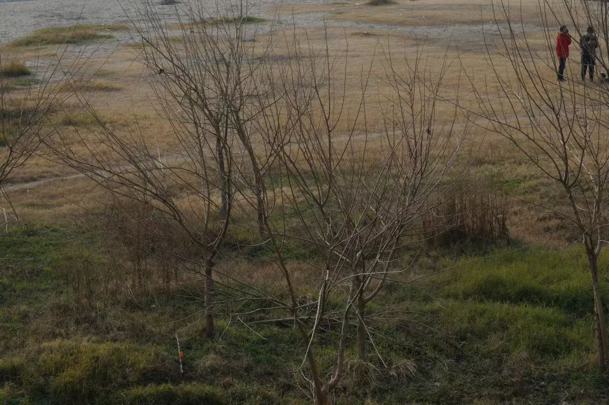
 市民们相互攀谈
市民们相互攀谈
奔向长江的老哥，看见我在拍他，顺势来了个倒立
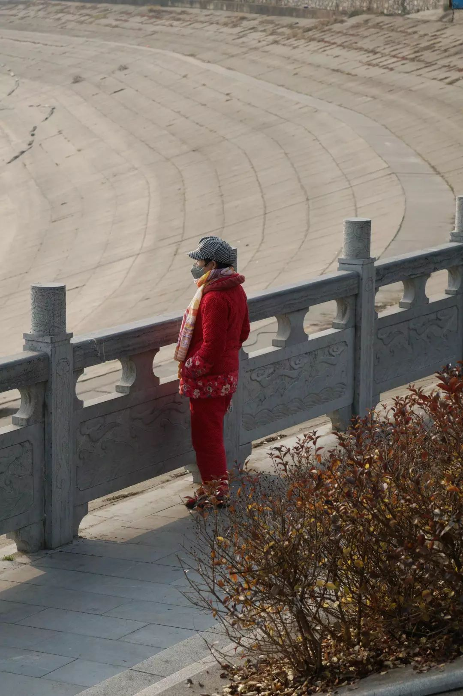
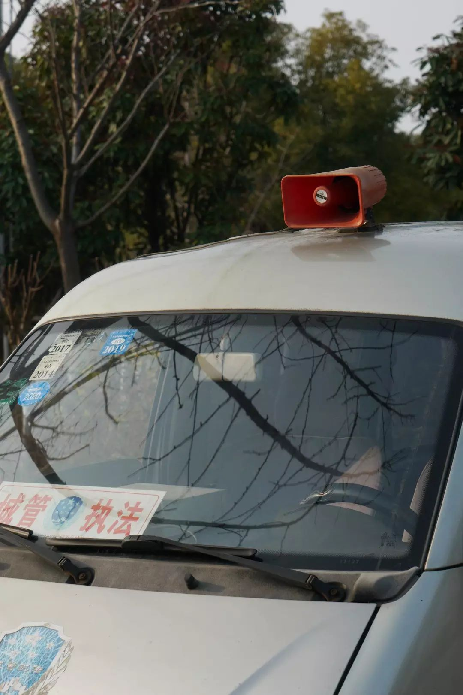小喇叭一直在循环提示市民出门的危险性
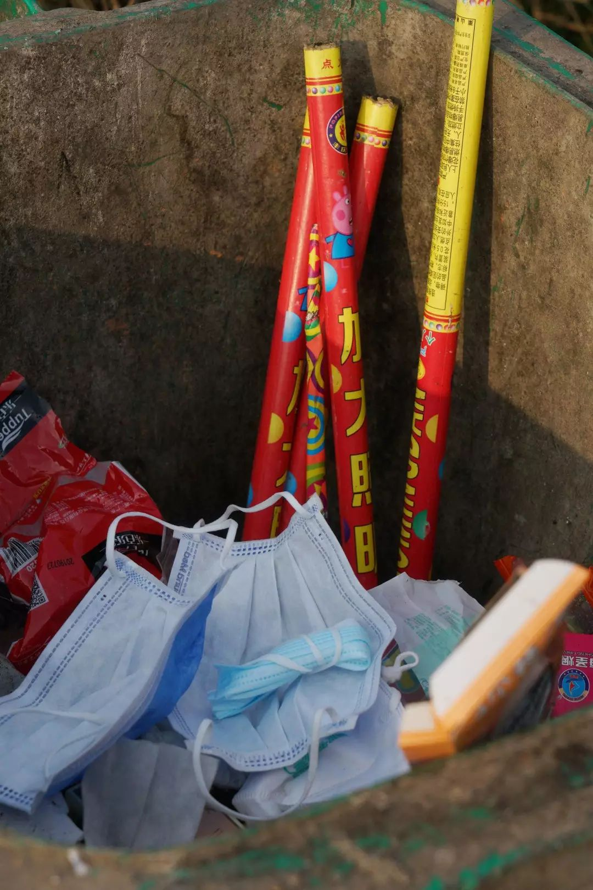
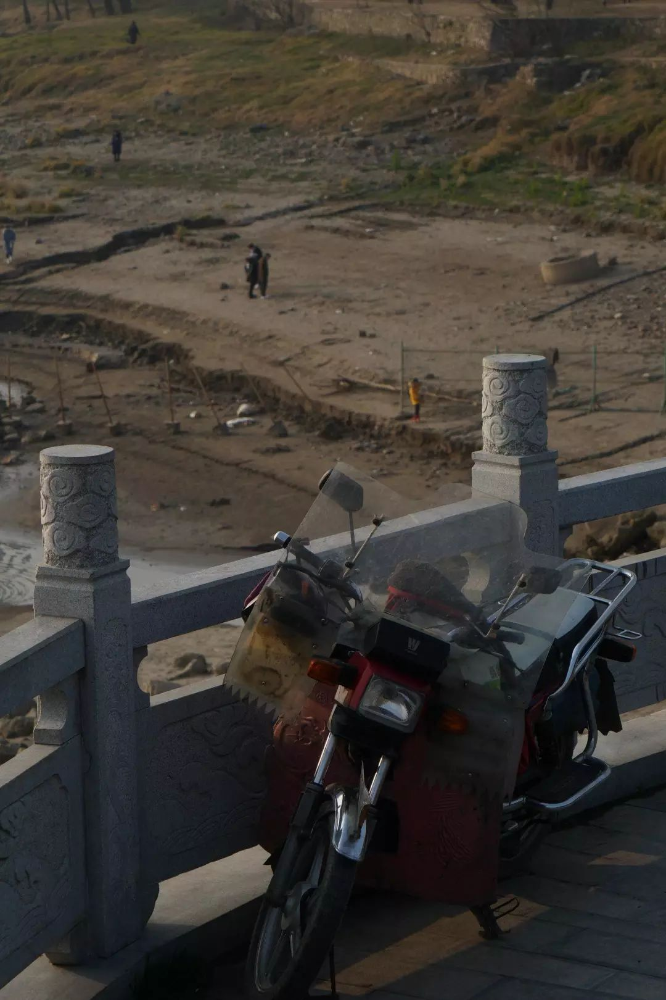

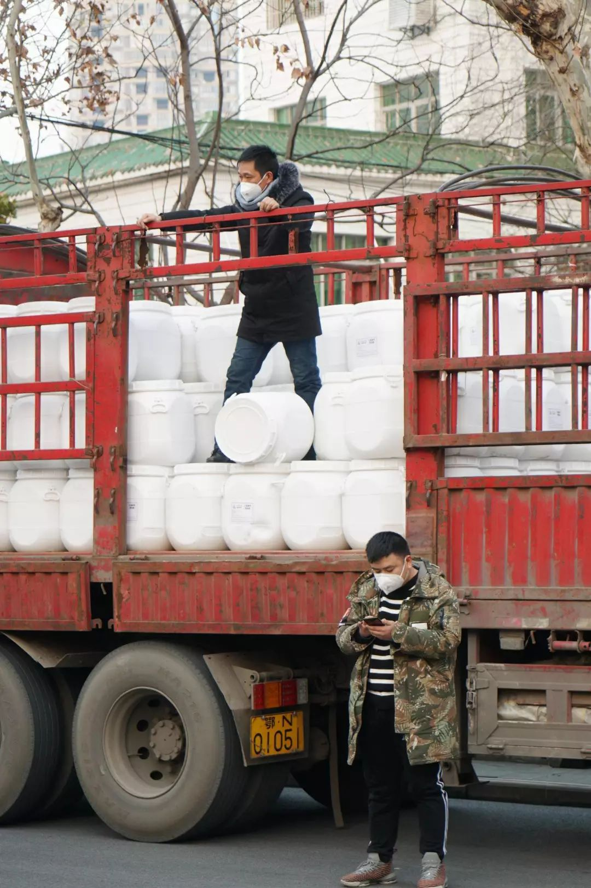在红十字会门口卸货的工作人员
// 作者：maomaokun
// 编辑：蔡菜，Alexwood
在这次疫情中，你是否被迫改变了自己的生活习惯，你和周围的人产生了怎样新的关系，你获得了哪些观察和思考？如果你有想法想要分享，请发送电子邮件到 tougao@yishiyise.com，注明 “武汉呼叫”，我们的编辑看到后可能会与你联系。
2019 年年末的时候我们希望每个人都能在 2020 年更脚踏实地一点，而 2020 如此凶猛，当我们都困在这场灾难之中，每一个你身边的故事带来的感受或许都将指向我们的未来。虽然叫 “武汉呼叫”，但疫情影响的是我们所有人。无论你来自哪里，身在哪里，我们都想听到你的故事。
原文链接 备份链接 *************▲*************1月30日，市民在郑州市一家大型超市内采购蔬菜。 （新华社记者 冯大鹏/图） 全文共2577字，阅读大约需要7分钟。 支撑我家一路走来的，有三样法宝：萝卜、白 …
原文链接 备份链接 国家已出台相应政策 鼓励企业增产紧缺物资几经周折，终于拿到了通过微商“团购”的那几盒口罩之后，广西南宁的连钰（化名）反而睡不着觉了。她忍不住疑惑，“河南厂家”生产的口罩，为何从武汉发货？为何口罩外包装的箱子上，会写 …
原文链接 备份链接 文 | 杨长安 情人节后的第二天，辛野开始帮助在外地回不了武汉的人喂宠物。 在此之前，这位健身教练在仅有一个棉质口罩的情况下，为不能出门的武汉居民送了九天的食物和生活用品。二月的武汉还很寒冷，注册为临时跑腿员的辛野， …
原文链接 备份链接 澎湃新闻记者 王选辉 实习生 郑旭 对于这次疫情，湖北省统计局副局长叶青用了“前所未有”来形容他所受到的影响。他向澎湃新闻回忆，周围人包括他自己，是在1月20日的晚上，当钟南山院士谈到这个病毒会“人传人”之后，才意识到 …
原文链接 备份链接 新冠肺炎疫情的医疗物资告急，各地纷纷发出求助信息。与此同时，海外华人行动起来在异国采购紧缺物资，却苦于没有渠道运抵国内抗疫一线。一条绿色通道出现，为救援物资架起跨洋的生命运输线。 故事时间：2020年 故事地点：海 …